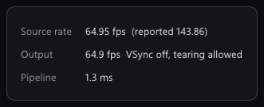
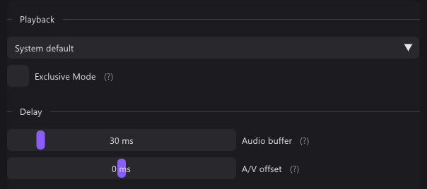
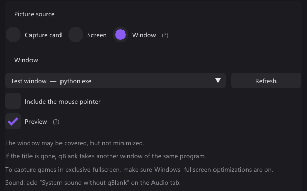

In short
Compared with Streaming Center 1.8.22.2, its release notes, AVerMedia's product page and its Japanese manual.
| qBlank | Streaming Center | |
|---|---|---|
| Source code | Open, GPLv3 | Closed, free |
| Made for | Playing on a card, screen or window, and recording it | Streams and recordings with AVerMedia devices |
| Devices | Any capture card | AVerMedia cards, cameras and microphones only |
| Systems | Windows 10 and 11, 64-bit | Windows 10 and 11, 64-bit |
| Download | One file, about 3 MB | Installer, 335 MB |
| Display | Own renderer, Direct3D 11 or Vulkan | The scene, in the main window, a preview window or full screen |
| Analogue consoles | Video standard, deinterlacing, composite filters | Video standard and deinterlacing not stated |
| Screen and window | Monitor or window | Monitor or window, as sources in a scene |
| Recording | MKV, MP4, AVI; H.264, H.265, AV1, lossless | H.264, H.265, AV1; container not stated |
| Streaming | – | To several platforms at once |
| Replay buffer | Memory or disk, up to 30 minutes | – |
| Virtual camera | 64-bit, HDR | Yes |
The two projects
Streaming Center
- AVerMedia's app for streams and recordings. It brings RECentral, CamEngine and VibeEngine together.
- RECentral 4 got security updates until 31 August 2026.
- Free, closed source. For Windows 10 and 11, 64-bit.
- 1.8.22.2 came out on 27 May 2026, as an installer of 335 MB. A beta, 1.9.4.5, followed on 10 September 2026.
- The devices' own settings are in a second program, AssistCentral Pro.
- AVerMedia's FAQ: the older StreamEngine clashes with Windows 11 24H2 and can upset Streaming Center and OBS.
qBlank
- Open source under GPLv3. Code, issues and releases are on GitHub.
- English and German, with a manual in both.
- One file of about 3 MB, from winget, the website or GitHub.
- Recording needs ffmpeg. qBlank offers to download it, from a fixed source, checked against its hash.
- Updates are checked on start, if you want.
Capture card: display
Streaming Center: a scene
- The card is a source in a scene, on a canvas with its own resolution and frame rate.
- The main window shows the scene. A preview window shows it on its own, even with Streaming Center minimised. Full screen too.
- The general settings have a switch for VSync.
- RTX Video Super Resolution sharpens low-resolution sources on an NVIDIA RTX card.
qBlank: its own renderer
- qBlank draws the picture itself, with Direct3D 11 or Vulkan. Display → Graphics API picks one.
- Each frame is drawn when it arrives, at the source's rate. A frame not yet drawn is replaced by the next, never queued behind it.
- One frame of queue in the swap chain, tearing allowed, VSync off by default.
F1 shows what qBlank adds itself: Pipeline is the time from a frame's arrival in qBlank until it leaves qBlank. About 1 ms at 1080p60. The card and the monitor add their own on top.

The two were not measured against each other here.
Capture card: setup
Streaming Center
- It opens AVerMedia devices only, and only with their driver installed.
- A source's settings set resolution, frame rate and format, as far as the device offers them.
- VRR recording mode, on the GC553G2, GC553Pro and GC575, is meant to reduce flicker and stutter.
- HDR recording for cards that send P010, with HDR tone mapping and brightness.
qBlank: fitted to the signal
- Source lists what the card offers: Colour format, Resolution and Frame rate.
- Match the resolution to the video standard is on by default: if the resolution does not fit, say 720×480 on PAL, qBlank sets the right one itself.
- Enter values manually is there for formats a card does not list.
- NV12 and P010 as well as YUY2, UYVY and RGB. 10-bit stays 10-bit, HDR stays HDR.
- The colour range is measured from the picture.

Capture card: sound
Streaming Center: a mixer
- The audio mixer takes input devices, and the PC's own sound.
- Microphones get noise suppression, by AVerMedia's AI or NVIDIA's, and echo cancellation. Also a noise gate, de-esser, reverb, EQ and compressor.
- Audio monitoring plays a source back. AVerMedia advises muting Default Audio Output then, or the game sound may be doubled in the recording.
qBlank
- Any format the card sends. qBlank converts it to what the device plays.
- Audio buffer from 5 to 200 ms, 30 by default.
- Exclusive Mode bypasses the Windows mixer for less delay. It locks the device against other programs.
- A/V offset moves sound or picture by up to 200 ms during playback, for a TV or headset that adds its own delay. It does not touch the recording.
- M mutes, + and - set the volume. Neither touches the recording.
- Microphones and other inputs go into the recording as separate sources. See Recording.

Analogue consoles
- Streaming Center's manual says nothing about the video standard or deinterlacing. It has no filters for composite or pixel art.
- qBlank finds the video standard, deinterlaces what is interlaced, and has filters for composite and pixel art. See analogue consoles on the AmaRecTV page.
Screen and window
| qBlank | Streaming Center | |
|---|---|---|
| What it takes | A whole monitor, or one window | A monitor, or a window from a list |
| Mouse pointer | Switchable | Switchable on the monitor |
| How | As the picture source | As a source in a scene, next to others |
qBlank
- Screen takes a whole monitor, Window one window, games and video included.
- A covered window comes through. A minimised one does not.
- If the title changes or the window is gone, qBlank takes another window of the same program.
- System sound without qBlank records everything except qBlank's own playback. qBlank stays audible and nothing echoes.
- Hide qBlank from the capture is on by default for the screen. It keeps qBlank out of every screen capture, Remote Play and Remote Desktop included.



Recording
| qBlank | Streaming Center | |
|---|---|---|
| Containers | MKV, MP4; AVI for lossless | Not stated |
| Video codecs | H.264 on NVENC, Quick Sync, AMF or x264; H.265 on NVENC, Quick Sync, AMF or x265; AV1 on NVENC, Intel Arc, AMD or SVT-AV1 | H.264, H.265, AV1; AV1 with the GC553G2, GC553Pro, GC551G2, GC575 or GC573, from an RTX 40 or RX 7000 |
| Lossless | H.265 lossless on NVENC, UT Video, uncompressed RGB | Not stated |
| HDR | From card, screen or window | From cards that send P010 |
| Sound sources | Card, inputs, outputs, system without qBlank; gain up to +12 dB | The mixer: devices and the PC's sound, with filters |
| Tracks | Mixed, separate, or both | Not stated; Voice Mode adds the voice as an MP3 |
| Pause | Its own key, one file without a gap | A button |
| Replay buffer | Memory or disk, 5 s to 30 min | – |
Streaming Center
- The recording is set in the settings, on the Output tab. A + opens more details.
- Profiles switch between a landscape and a portrait layout, the latter for viewers on phones.
- It streams too, to several platforms at once.
qBlank
- The encoder runs inside qBlank, through ffmpeg's libraries. With NVENC and AMF the frame goes from the GPU to the encoder without a copy.
- A change of size or video standard during a recording starts a new file, seamlessly.
- MKV stays playable after a crash.
- The replay buffer and the recording share one encoder. Shift+F9 saves the last minutes as a clip.
- Markers: Ctrl+Shift+F9 sets one, players show them as chapters.


Screenshots and virtual camera
- Streaming Center takes a still with a snapshot. The format is not stated.
- qBlank saves PNG, JPEG, JPEG XR or AVIF, HDR as JPEG XR or AVIF. Ctrl+F10 copies to the clipboard.
- Both have a virtual camera. qBlank's is a DirectShow source for 64-bit programs, HDR included. How Streaming Center's works is not stated.

Keys
| qBlank | Streaming Center | |
|---|---|---|
| Keys to set | Every action | Five |
| Keys in a game | A second key under System-wide; no other program gets it | Not stated |
| Record | F9 | One key for recording or streaming, one for recording on the source or SD card |
| Stream | – | A key |
| Screenshot | F10 | A key |
| VRR recording mode | – | A key |
| Pause | Pause | – |
| Save replay | Shift+F9 | – |
- A reset button restores Streaming Center's default keys. The manual does not name them.
- qBlank's system-wide keys are unbound out of the box.

Only in Streaming Center
- Scenes with layers and picture-in-picture: cameras, images, text.
- Streaming, to several platforms at once.
- AVerMedia cameras and microphones, with their settings.
- Filters for the microphone: noise, echo, gate, EQ, compressor and more.
- RTX Video Super Resolution.
- VRR recording mode, on three cards.
- A portrait layout for viewers on phones.
- The voice as an extra MP3.
Only in qBlank
- Any capture card, not only AVerMedia's.
- Composite filters and the console's native pixel grid.
- Replay buffer in memory or on disk, up to 30 minutes, and markers.
- Open source.